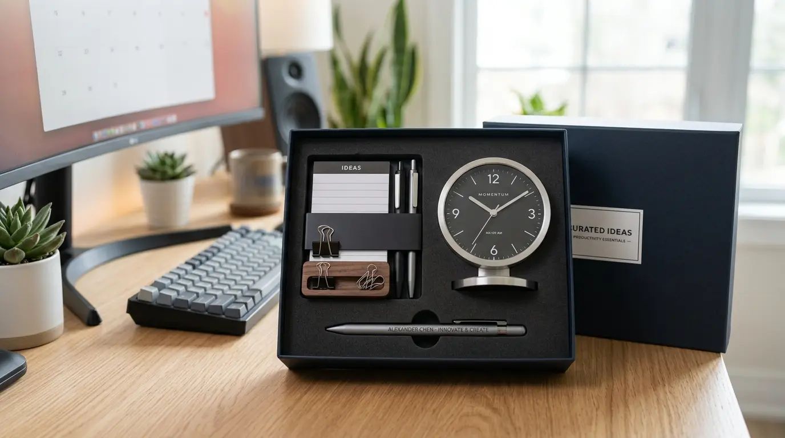

Souvenir Kantor Custom Logo sebagai Investasi Branding, Bukan Sekadar Hadiah
 Hawa Nadira (haw)
10 Agustus 2026
5 Menit Baca
Hawa Nadira (haw)
10 Agustus 2026
5 Menit Baca

Souvenir kantor custom logo adalah barang bernilai fungsional yang dicetak dengan identitas visual perusahaan untuk memperkuat pengenalan merek. Barang ini biasa dibagikan kepada klien, mitra bisnis, maupun karyawan dalam berbagai momen resmi. Fungsinya bukan sekadar formalitas, melainkan alat pemasaran senyap yang bekerja jangka panjang setiap kali digunakan penerimanya.
Souvenir kantor custom logo adalah barang bernilai fungsional yang dicetak dengan identitas visual perusahaan untuk memperkuat pengenalan merek. Barang ini biasa dibagikan kepada klien, mitra bisnis, maupun karyawan dalam berbagai momen resmi. Fungsinya bukan sekadar formalitas, melainkan alat pemasaran senyap yang bekerja jangka panjang setiap kali digunakan penerimanya.
Mengapa Logo pada Souvenir Kantor Berdampak pada Citra Perusahaan
Logo yang tercetak rapi pada sebuah barang menyampaikan pesan tanpa kata: perusahaan Anda memperhatikan detail. Klien yang menerima tumbler, notebook, atau tas kerja dengan logo yang presisi akan mengasosiasikan kerapian tersebut dengan cara perusahaan menjalankan bisnisnya.

Sebaliknya, cetakan logo yang pudar, posisi yang tidak simetris, atau warna yang meleset dari brand guideline justru dapat menurunkan kepercayaan, bahkan sebelum transaksi bisnis dimulai. Di sinilah letak nilai strategis souvenir korporat: ia menjadi representasi fisik dari standar kerja perusahaan.
Sebuah tas kerja berbahan premium dengan bordir logo yang halus akan terus dipakai karyawan atau klien dalam aktivitas sehari-hari, dan setiap kali itu terjadi, nama perusahaan Anda ikut terlihat oleh orang-orang di sekitar mereka.
Elemen Desain yang Wajib Diperhatikan pada Souvenir Berlogo
Konsistensi visual adalah kunci utama. Logo yang dicetak pada souvenir harus mengikuti brand guideline resmi, mulai dari kode warna, proporsi ukuran, hingga area kosong di sekitar logo (clear space) agar tidak terlihat penuh sesak. Teknik cetak juga perlu disesuaikan dengan material barang; misalnya bordir lebih cocok untuk bahan kain tebal, sementara sablon digital lebih presisi untuk permukaan keramik atau plastik.
Kode Warna
Sesuai brand guidelineProporsi Ukuran
Tidak terlalu besar/kecilClear Space
Area kosong di sekitar logoSelain logo utama, banyak perusahaan kini menambahkan tagline singkat atau elemen grafis pendukung agar souvenir terasa lebih personal dan tidak sekadar tempelan logo. Pendekatan ini membuat barang terlihat seperti produk resmi bermerek, bukan merchandise generik yang ditambahkan logo secara terburu-buru.
Jenis Barang yang Ideal untuk Custom Logo Korporat
Tidak semua barang cocok dijadikan media branding. Barang dengan permukaan datar dan luas seperti tumbler, totebag, buku agenda, atau flashdisk cenderung memberikan ruang cetak yang optimal untuk logo. Barang-barang ini juga memiliki tingkat pemakaian harian yang tinggi, sehingga eksposur merek berlangsung berulang kali dalam jangka waktu lama.
Tumbler
Pemakaian harianTotebag
Mobilitas tinggiAgenda
Ruang cetak luasFlashdisk
Modern & fungsionalPerusahaan yang ingin memberi kesan lebih eksklusif kepada klien korporat maupun instansi biasanya memilih barang dengan nilai fungsional tinggi dan tampilan elegan, seperti set alat tulis premium atau tas laptop berbahan kulit sintetis berkualitas. Barang semacam ini menempatkan logo perusahaan pada konteks yang terasa mewah, bukan sekadar promosi murah.
Bagaimana Souvenir Berlogo Mendukung Loyalitas Karyawan dan Klien
Selain sebagai alat branding eksternal, souvenir berlogo juga berperan dalam memperkuat rasa memiliki karyawan terhadap perusahaan. Ketika karyawan menerima merchandise berkualitas dengan logo perusahaan pada momen tertentu seperti ulang tahun perusahaan atau pencapaian target, hal ini menumbuhkan rasa dihargai dan meningkatkan keterikatan emosional terhadap tempat mereka bekerja.
Bagi klien, souvenir berlogo yang diberikan pada momen kerja sama baru atau perayaan tertentu menjadi simbol penghargaan atas hubungan bisnis yang terjalin. Barang ini secara tidak langsung memperpanjang interaksi antara klien dan perusahaan, karena setiap kali barang tersebut digunakan, hubungan bisnis itu kembali diingat.
Butuh Souvenir Custom Logo untuk Branding Perusahaan?
Konsultasikan kebutuhan souvenir kantor custom logo dengan tim kami untuk mendapatkan rekomendasi produk terbaik.
Konsultasi SekarangKesimpulan
Souvenir kantor custom logo bukan sekadar hadiah, melainkan investasi branding yang bekerja jangka panjang. Setiap kali barang tersebut digunakan, logo perusahaan Anda terlihat dan meninggalkan kesan. Dengan memperhatikan kualitas cetak, konsistensi desain, dan pemilihan barang yang tepat, souvenir dapat menjadi representasi fisik dari profesionalisme dan perhatian perusahaan terhadap detail. Investasi kecil ini dapat memberikan dampak besar terhadap citra merek di mata klien, mitra bisnis, dan karyawan.
Pertanyaan Seputar Souvenir Kantor Custom Logo